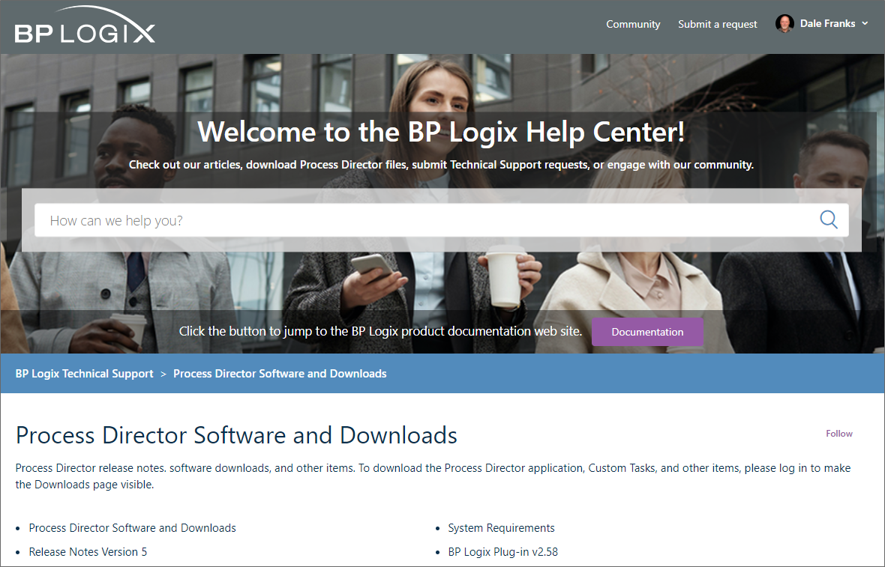

Reinstall/Upgrades/Moving Hosts
The Process Director can be reinstalled or upgraded with no loss of data. Any database table updates are automatically performed after the install completes.
Rolling Back to a Previous Installation #
After installing a new Process Director patch, you can roll back to the previous version by uninstalling Process Director and then reinstalling the previous version. However, some patches involve changes to Process Director’s database. If a patch has changed the database, new database columns, indices, and tables will need to be removed, and the tblSettings columns “nDBVersion” and “nDBVersionPrev” will need to be reset. If you are reverting to a patch that involves database changes, contact technical support for instructions on reconfiguring the database.
Uninstalling #
You may uninstall Process Director by using the Add or Remove Programs in the Control Panel:
-
Click on the Start button on the Windows taskbar.
-
Select Settings, then Control Panel.
-
Click on the Add or Remove Programs icon.
-
Select Process Director and click Remove.
The uninstall program will NOT remove the Process Director database, the website, or the virtual directory.
Upgrading to a New Version #
The upgrade process for installing new versions of Process Director is very straightforward. Essentially, simply downloading and installing the new version will automatically upgrade your existing version of Process Director, and carry over all of your settings and licensing information. If you are upgrading to Process Director v3.41 or higher from an earlier version, however, you'll have to take the additional step of setting the Application Pool to use ASP.NET 4.5.
Process Director v5.44.700 and Higher
 Process Director v5.44.700 and higher uses AES encryption for all encrypted fields/data. This encryption change provides higher security, but it does affect the migration process the first time--and ONLY the first time--you install v5.44.700 or higher from v5.44.600 or lower. Again, this is a one-time change to the process. Upgrading from v5.44.700 to any higher version requires no special action.
Process Director v5.44.700 and higher uses AES encryption for all encrypted fields/data. This encryption change provides higher security, but it does affect the migration process the first time--and ONLY the first time--you install v5.44.700 or higher from v5.44.600 or lower. Again, this is a one-time change to the process. Upgrading from v5.44.700 to any higher version requires no special action.
Custom Tasks
You will need to update the Custom Tasks for your installation, prior to upgrading Process Director. Some Custom Tasks include changes to field properties that require updated versions. If you update the Custom Tasks after upgrading Process Director, then you'll need to go to the Server Control page of the IT Admin area's Troubleshooting section, and click the action link labeled, Encrypt Old Form Data.
Singe-Server Installations
Migration to AES encryption occurs automatically for customers, by default, when installing v5.44.700 on a single-server installation. This migration may significantly increase the time needed to upgrade the system, depending on how extensively your installation uses encrypted fields. It is possible to disable the encryption migration, and migrate manually at a later date.
To disable the migration during upgrade, use the following procedure:
- Upgrade the Custom Tasks.
- Edit the Custom Variables file to set the fEnableEncryptionMigration custom variable to "false".
- Upgrade the server instance.
Migration to AES Encryption can later be done manually by navigating to the Server Control page of the IT Admin area's Troubleshooting section. In the list of action links on this page, click the link labeled, Migrate to AES Encryption. The migration will start and run in the background. Logs will indicate when the migration process started and stopped, what tables were modified, and the row count of modified fields. If, for any reason, the migration is stopped, you can simply restart it using the same action link.
Multi-Server Installations
For multi-instance or load-balanced installations that use more than one Process Director server, the following procedure is required:
- Update the Custom Tasks on all servers.
- Stop all Process Director/web server instances.
- Upgrade Process Director on the primary system only.
- Start Process Director on the primary system and access a page or log in.
- Navigate to App_Data\bpProperties.xml and copy the following values in the Server Settings section of the file, which are highlighted in red, below:
<?xml version="1.0" encoding="utf-8"?>
<BP_PROPERTIES xmlns:xsd="http://www.w3.org/2001/XMLSchema" xmlns:xsi="http://www.w3.org/2001/XMLSchema-instance">
...
<SERVER_SETTINGS>
<--! COPY THE NODES/VALUES BELOW -->
<sEncryptionKeyDoNotModify>...</sEncryptionKeyDoNotModify>
<sCheckValue>...</sCheckValue>
<--! COPY THE NODES/VALUES ABOVE-->
...
-
Paste those two values, at the same line location, in the bpProperties.xml files for all other systems, and save them.
-
Upgrade and then start Process Director on the other systems, one system at a time.
Additional AES encryption configuration requirements for load-balanced servers are discussed in the Load Balancing topic of the System Administrator's guide.
After upgrading to v5.44.700 and restarting the Process Director server, customers with on-premise installations must make a backup of their bpProperties.xml file. This file also contains the encryption key, so backing it up ensures that you have a backup of it. If you ever have to re-install from scratch (such as when moving hosts), you won't be able to recover your existing encrypted data without it.
Upgrade Process
To begin the upgrade process, log into the BP Logix Support site and navigate to the Downloads page.

Download the installation file for the new version by clicking on the link labeled "Download Process Director Install program vX.XX". Depending on your web browser, the file will be downloaded automatically, or via a Save dialog box. You'll be able to monitor the Download in your Browser and open the installation file when the download completes, just like any other file.
The installation will begin unpacking the installation files.

Once the installation files are unpacked and verified, if you are installing v3.4X or above, you'll receive a warning notifying you that you must change the application pool settings in IIS to use ASP.NET v4.5.

 Process Director v4.57 and higher requires the .NET Framework v4.6. Process Director v5.X requires the .NET Framework v4.7.
Process Director v4.57 and higher requires the .NET Framework v4.6. Process Director v5.X requires the .NET Framework v4.7.
Once you accept the warning by clicking the OK button, the Installation Wizard will appear.

Click the Next button to show the next pane of the Wizard, which displays the License Agreement for Process Director. To continue the wizard, you must accept the terms of the license agreement by checking the acceptance check box.

Click the Next button again to display the installation location for Process Director. The destination folder can't be changed for upgrades, so there is nothing for you to do in this pane of the wizard, except click the Next button.

The installation is now ready to begin. Click the Start button to begin the installation. The Wizard will display a progress pane while the installation proceeds.

Once the installation is done, the Wizard will display a notification pane.

Click the Finish button to close the wizard. After a few seconds, a dialog box will appear to set the base URL for the Process Director installation. By default, this will be the existing URL of the installation, so, you shouldn't have to change the URL. Click the OK button to close and save the URL.

The Installation is now complete, but, if you are upgrading to v3.4X or above from an earlier version, Process Director won't work until you reconfigure the Application pool in IIS. If you try to open Process Director at this point, you'll receive an error message, most likely "HTTP Error 500.19 - Internal Server Error".
Open the Internet Information Service (IIS) Manager.

In the Connections pane of the IIS Manager, click on Application pools to display the application pools for IIS in the center pane. Find the application pool you have assigned to Process Director, right-click on it, and select Basic Settings from the popup menu. The basic settings dialog box will open.
Change the .NET CLR Version dropdown to .NET CLR Version v.4.0.XXXXXX (the precise version will be slightly different depending on the environment, but it should be at least v4.0.30319). Be sure that the Start application pool immediately check box is checked. Click the OK button to save your changes.

This should complete the upgrade process for Process Director.
Upgrading Multi-Instance Installations #
Upgrading a multi-instance installation of Process Director to a new version is similar to the initial installation; however, you do not need to run the BP_Multi.exe application again. Once the system is configured for multi-instance use, this application is no longer needed. You will only need to run BPLogixMultiInstance.exe to perform the upgrade on the desired systems.
Once you install a newer version of Process Director on a Multi-Instance system, you can't install an older version again.
The main difference in running an upgrade is that, because you can run different installation versions on different instances, there are two different upgrade scenarios to account for.
Scenario 1: Upgrading when ALL instances are using the same version
You must edit the configuration text file to include only the instances you wish to update. For example, if you have three instances on a system, all running the same version, and you want to upgrade only instance number two and three, then you'd only include those two instances in the configuration text file. In this example, we'll name the file "upgrade.txt", and use the following configuration:
GROUP=My Server Group
NAME=Instance2
PATH=c:\wd2
NAME=Instance3
PATH=c:\wd3
Using this configuration, Instance 1 will remain on the older version of Process Director, while Instances 2/3 will be upgraded to the new version.
Once the text file has been configured, you can run BPLogixMultiInstance from the command line again, using the file path/names of the upgrade.txt configuration file and new Process Director installation file, e.g.:
BPLogixMultiInstance.exe "BP_GROUP=c:\upgrade.txt" "BP_INSTALL=c:\ProcessDirectorv2Install.exe"
Scenario 2: Upgrading when SOME instances are ALREADY using a newer version
You must edit the configuration text file to include ALL the instances that will run the new version, including any existing instances already running that version. For example, let's say have three instances on a system, running the following versions.
| Instance1 |
v1 |
| Instance2 |
v2 |
| Instance3 |
v2 |
To upgrade Instance 1 to v2, you must include all three instances in the configuration text file when upgrading. The installer will uninstall any existing versions of the upgrade, and won't reinstall them, if they aren't listed in the configuration file. Thus, your configuration file, which we'll call "upgrade.txt" again, would need to look like the example below.
GROUP=My Server Group
NAME=Instance1
PATH=c:\wd1
NAME=Instance2
PATH=c:\wd2
NAME=Instance3
PATH=c:\wd3
Using this configuration, all three instances will run Process Director v2 once the installation completes.
Once the text file has been configured, you can run BPLogixMultiInstance.exe from the command line again, using the file path/names of the upgrade.txt configuration file and new Process Director installation file, e.g.:
BPLogixMultiInstance.exe "BP_GROUP=c:\upgrade.txt" "BP_INSTALL=c:\ProcessDirectorv2Install.exe"
During the upgrade process, all sites that are currently running the targeted version will be unavailable until the upgrade process concludes.
Moving Process Director to a New Host #
The Process Director installation can be moved to another Windows host. This may be required due to an upgrade to your hardware or copying the system to a test server. To perform the move, follow the instructions below.
- Copy the Process Director database from the other system to the new server.
- Install Process Director on the new server.
- Copy these folders from the old server to the new server:
\Program Files\BP Logix\Process Director\website\custom\
\Program Files\BP Logix\Process Director\website\App_Data\
- Set the Interface URL.
After Process Director is activated with the copy of the database from the other system, navigate to the Properties page in the IT Admin area's Installation Settings section and ensure the Interface URL property points to the URL of the new server (if any values were configured).
- Rerun the registration process
Rerun the registration process on the new server by navigating to the Licensing tab under Installation of the Administration section and enter the serial number sent to you.
- Recreate the appropriate database connection strings on the new server.